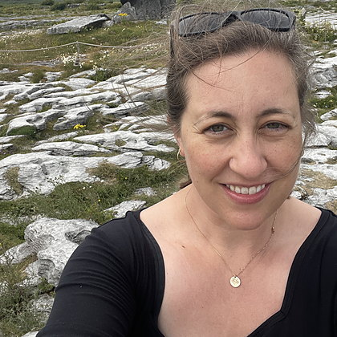

Anna D. Gibson
I do research on trust, knowledge, and virtual communities in the digital media ecosystem.
- Research Associate, Independent Media + Audience Project at the Shorenstein Center, Harvard Kennedy School
- PhD, Department of Communication, Stanford University, 2023
About
I am a researcher at the HKS Shorenstein Center, where I work on the Independent Media + Audience Project. A growing share of what the public knows now arrives through independent creators, like YouTubers, rather than through newsrooms. Our project aims to map this emergent ecosystem from both the creator and audience perspectives.
Earlier, I researched online communities on Facebook, particularly governance and content moderation at both the platform level and from the level of volunteer admins. That work still shapes how I think about trust and authority online.
My career began in Silicon Valley, where I worked for Cisco IT in UX before returning to school. I received my PhD in Communication from Stanford in 2023, and subsequently spent two years as a postdoc at MIT’s Comparative Media Studies/Writing program. I also reviewed hundreds of manuscripts as an Associate Managing Editor for the Journal of Computer-Mediated Communication.
I write for academic and general audiences, and I am always glad to hear from journalists, researchers, and people building things in this space.
Selected writing
-
2026 — forthcoming
Over-the-Shoulder Observation of Facebook Group Admins
A methods chapter on what you learn by watching moderators work in real time, rather than asking them about it afterward.
Book chapter in D. Proctor (Ed.), Practicing Digital Ethnography. Routledge.
-
2024
Health and toxicity in content moderation: the discursive work of justification Open access
Everyone from platform executives to policymakers describes online spaces as “healthy” or “toxic,” as if the terms were obvious.
With Niall Docherty and Tarleton Gillespie. Information, Communication & Society, 27(7), 1441–1457.
-
2023
What Teams Do: Exploring Volunteer Content Moderation Team Labor on Facebook Open access
Volunteer moderators almost always work in teams, and it is not just about splitting the workload.
Social Media + Society, 9(3).
-
2022
Review: Work Pray Code
On what happens when Silicon Valley absorbs spirituality into the workplace.
The Arts Fuse.
-
2020
The promise of restorative justice in addressing online harm
An argument that platforms’ reflexive answer to harm — delete the post, ban the user — leaves the people who were harmed with very little.
With Amy A. Hasinoff and Niloufar Salehi. TechStream, Brookings Institution.
-
2019
Free Speech and Safe Spaces: How Moderation Policies Shape Online Discussion Spaces Open access
Two Reddit forums, same topic, same size, opposite moderation philosophies, and roughly a quarter of a million comments across 14 months.
Social Media + Society, 5(1).
A full list is on Google Scholar.
Speaking
- 2024Australian Community Managers
- 2024MIT Comparative Media Studies/Writing, departmental talk
- 2024Tufts University, Science, Technology & Society seminar
- 2023Tufts University, Human–Robot Interaction Symposium
I have also presented at CSCW, the International Communication Association, the American Sociological Association, the Platform Governance Research Network, the Trust and Safety Research Conference, 4S, and HICSS. If you are organizing a panel, briefing, or class visit, please do get in touch.
Contact
The fastest way to reach me is email. I am happy to hear from journalists on deadline, researchers working on adjacent questions, and anyone who has read something of mine and has thoughts about it.